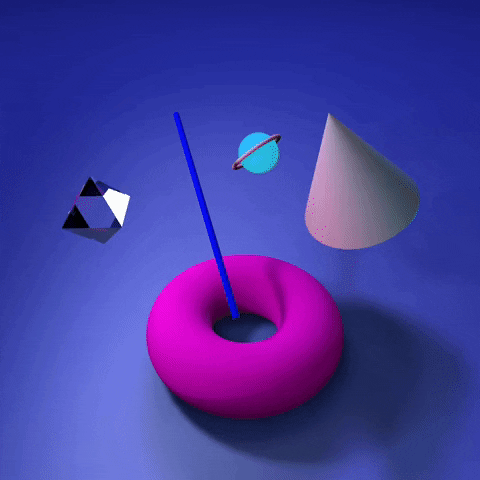

By transitioning to a reference data architecture, organizations can capture value from analytics at scale. Financial institutions are upgrading their technology to navigate the pandemic. But in the current regulatory climate, new tech demands new ways of managing risk. Worldwide—organization-wide—employees are tired. As we wait for a widespread vaccine rollout—and as global CEOs gather for digital Davos in January—many wonder how leaders will revitalize and refocus their organizations for the long run. Graphics processing units can generate tremendous business value, but companies must be discerning in their application. A three-phase approach can help.
learn more!